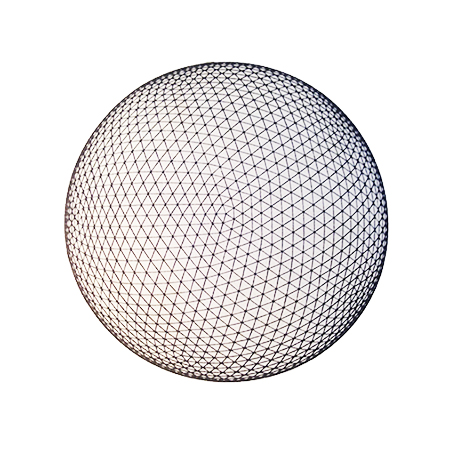
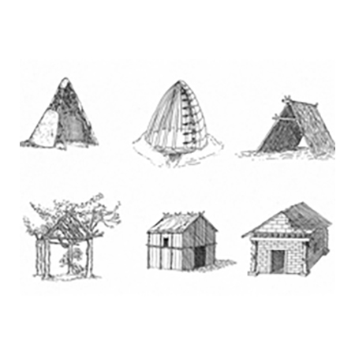
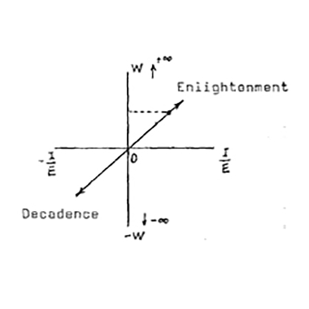

ABOUT
Modern Primitive Exchange (MPEx) is a forum of art, design and ideas for living through the End Times. We maintain a blog, write essays, collect media and support programming on this theme. Our mission is to determine what of the so-called “modern” and what of the so-called “primitive” are useful in a contemporary ecology. We aim to foster skills of self-reliance in the (post) modern world and encourage ecological thinking.
MPEx is produced by The Canary Project.
what we are
What is Modern?
The fantasy of progress.
The achievement of networks, efficiency and sanitation.
What is Primitive?
The fantasy of purity.
The achievement of simplicity, resource management and respect for the non-human.
Why Exchange?
To re-write the past
and openthe future.
To combine myths and tools.
Who we are
Concept and Creative Direction:
The Canary Project
Forum Editors:
Edward Morris, Susannah Sayler, Dmitri Siegel and Sinclair Smith
Artists and Educators:
Matt Barber, DS Institute, Zach Dunn, Caitlin Foley, Charlotta Hellichius, Edward Morris, Megan Ofner, Evan Paschke, Zena Pesta, Misha Rabinovich, Jon Santos Susannah Sayler, Sinclair Smith, Leila Nadir + Cary Peppermint (EcoArtTech), Evan Weissman, Tatfoo Tan, Jill Allyn Peterson
Contributors:
Henry Peterson, Alexander Velez Burgos

Share your project with the
MPEx community